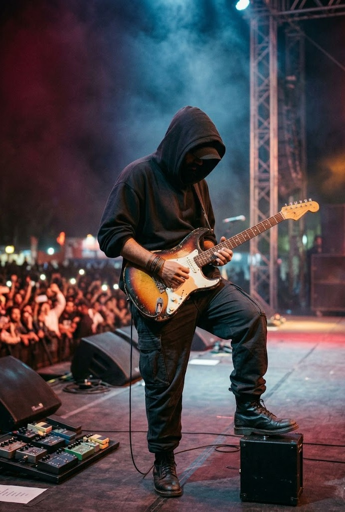

The Characters of Sulphite
"زندگی کے سات پہرو کی کہانی""
Umme Hanam
اُم حانم
اُم حانم، جسے محبت سے ماہی پکارا جاتا ہے، "سلفائٹ" کا وہ جذباتی اور پیچیدہ ستون ہے جس کے گرد کہانی کی سانسیں چلتی ہیں۔ وہ صرف ایک کردار نہیں، بلکہ وہ خاموش درد ہے جسے خاموشی ہی سمجھ سکتی ہے۔ وہ ایک ایسی لڑکی ہے جسے زندگی نے بارہا آزمایا، جسے "تاریک راتوں میں سکت" دیکھا گیا۔ ماہی کا سلفائٹ اس کے اندر چھپا وہ طوفان ہے جو اسے بے چین رکھتا ہے، مگر وہ اپنی معصومیت اور گہرائی سے قارئین کے دلوں میں اتر جاتی ہے۔ اس کا سفر جنت روڈ سے جہنم کی گہرائیوں تک کا سفر ہے، جہاں وہ اپنی روح کو تلاش کرتی ہے۔
"سجدہ وہ نہیں جو صرف سر جھکا دے، سجدہ وہ ہے جو انا کو خاک کر دے"
Umme Hanam, endearingly called 'Mahi,' is the emotional and volatile center of *Sulphite*. She is the silent suffering mentioned by the writer, the one who found herself in the shadow world that others failed to comprehend. Mahi embodies the internal struggle against trauma and volatility (the metaphorical 'Sulphite' in her soul) that defined her journey from 'Jannat Road' (Paradise Road) into deep emotional suffering. Her character is a profound exploration of grace in brokenness.

Rohan Jabeel
روحان جبیل
روحان جبیل "سلفائٹ" کا وہ مردانہ کردار ہے جو شدت، پیچیدگی اور ایک پراسرار کشش کا امتزاج ہے۔ روحان وہ شخص ہے جسے کہانی کے دوسرے کردار (ایلا یا ماہی) "اپنے کسی درد کی بات" سناتے ہیں۔ وہ ذہین، شدت پسند، اور جذباتی طور پر مستحکم نظر آنے کے باوجود اندرونی کشمکش کا شکار ہے۔ اس کا کردار کہانی میں ایک ایسا 'ری ایکشن' (تامل) پیدا کرتا ہے جو سلفائٹ کی فطرت کی طرح غیر متوقع اور تباہ کن ہو سکتا ہے۔ روحان جبیل کی گہری آنکھیں اور خاموش انداز اس کے اندر چھپے ان گنت رازوں کا پتہ دیتے ہیں جو پوری کہانی پر حاوی رہتے ہیں۔
"تم اپنے کسی درد کی بات کرتے ہو، روحان جبیل؟ میں نے امِ ہانم کو تاریک راتوں میں سکتے دیکھا ہے۔"
Rohan Jabeel is the intense, enigmatic counterpart to Umme Hanam. He is the listener, the catalyst for reactions, and a character defined by deep, hidden conflict. Though presenting an image of strength and intelligence, Rohan is the recipient of Mahi’s deepest confusions. His character is designed to mirror the chemical reaction of Sulphite itself: unpredictable, sharp, and capable of profound impact. He moves through the 'Seven Watches' of the story as a figure marked by secrets and unresolved emotional depth.